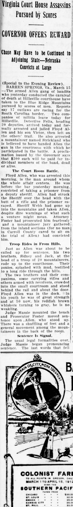
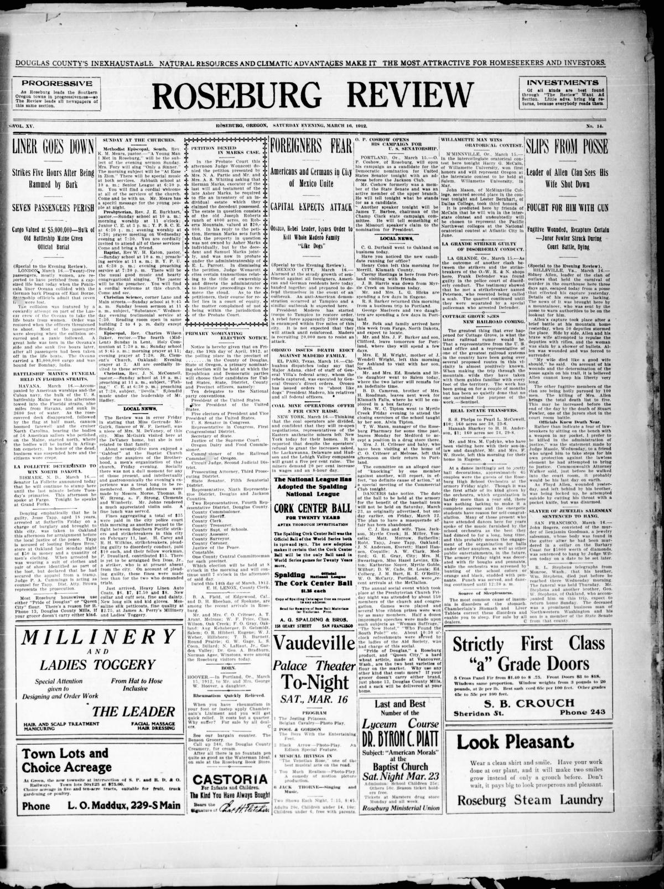
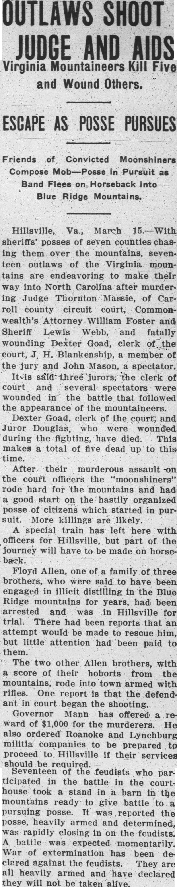
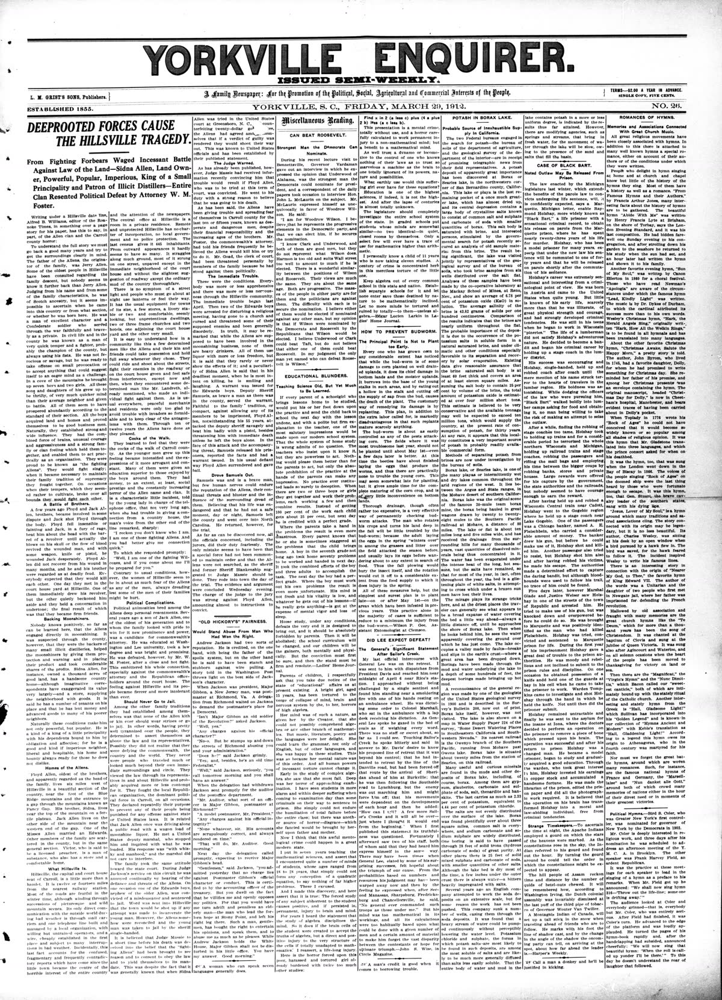

HN HN-381 · March 16, 1912 · Crime, Law & Justice > Murders & Assassinations > Mass killings
Source: Jasper County Democrat, p. 2 — original page.
Report: Gunfire broke out in a Hillsville, Virginia, courtroom; the report named Judge Thornton Massie, Commonwealth's Attorney William Foster, and Sheriff Lewis Webb among the dead and gave an initial toll of five. It described pursuit of members of the Allen family into the Blue Ridge Mountains and repeated claims that the suspects were a coordinated gang of illicit whiskey distillers.
Assessment: This is a period account of a real courthouse shooting and manhunt. Assertions that each named person was a 'moonshiner' or participated in a preplanned murder conspiracy were not adjudicated in this dispatch. Its descriptions of imminent gun battles are predictions, not outcomes. Follow-up open on trial-by-trial results.
Authentic images retrieved from Historic Oregon Newspapers (University of Oregon), Hoosier State Chronicles (Indiana State Library) and South Carolina Historic Newspapers (University of South Carolina). Article crops are located using the archive's own OCR word coordinates and rendered at native crop resolution; article clips are assembled from the archive's own article-block images; page scans are reduced-size access renditions. No images were generated, mocked, or retouched.




Not yet acquired. Queued for provider-specific acquisition testing (see source-acquisition manifest).
URL (preserved verbatim): https://newspapers.library.in.gov/?a=d&d=JCDC19120316.2.49
Saved research report: Historical_Newspaper_Event_Research_378-402_2026-10-23.md
Evidence note: A newspaper report means a historical publication made a claim; it does not establish that claim as fact. Contemporary reporting is separated from later scholarly context and our own assessment.